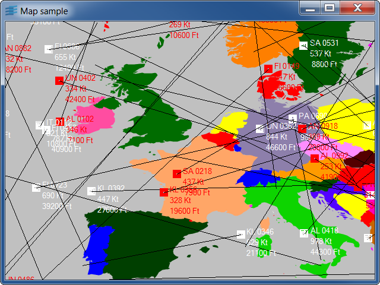

Sample: map
Uses a manager view hook to improve the drawing performance
of a whole map by storing it in a bitmap.

Shows the use of a hook on the beforeDraw event to maintain a
background map while many graphic objects are animated using
a timer.
A pan/zoom interactor is installed on the manager view to allow
scrolling and zooming using the mouse.
- left button down + mouse motion: scroll in the
given direction.
- right or middle button down +
- upward motion: zoom out
- downward motion: zoom in
The manager default accelerators are available:
- 'Z': zoom in
- 'U': zoom out
- 'i': set transformer to 'identity'
- 'f': fit to size
- 'R': rotate drawing
- arrows: pan in a given direction
Additional accelerators:
- 'b': set/unset double buffering
- 'm': show/hide the map
- 's': stop/start the animation
- 't': show/hide the routes of the animated objects
- '+': increase the animation speed
- '-': decrease the animation speed
Classes involved:
IlvManagerIlvManagerViewHook
Source files: